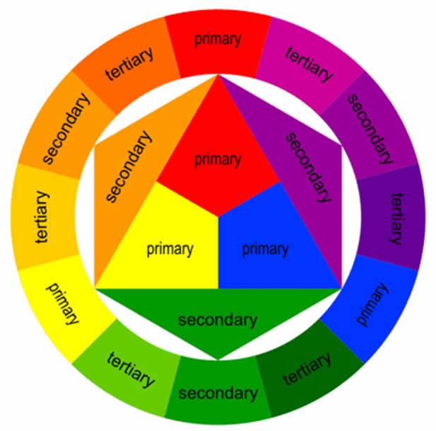

Коли компанія наймає працівників, вона очікує, що нові працівники відповідатимуть вимогам своєї роботи, а також зможуть вписатися в колектив і легко ладити з колегами. Відповідно, важливо, щоб у працівників був ряд навичок, які допоможуть їм відповідати критеріям роботодавця і бути чудовим вибором для своєї роботи. В цілому, навички можна розділити на 2 категорії: соціальні (міжособисті) і професійні.
Міжособисті Навички (на роботі)
Міжособисті Навички - це поведінка і тактики, які людина використовує для взаємодії з іншими. Деякі приклади міжособистих навичок:
- Робота в команді
- Комунікація
- Активне слухання
- Надійність
- Відповідальність
- Співчуття
- і т.д.
Професійні Навички (для Веб Розробника)
Мови
HTML (HyperText Markup Language)
HTML (HyperText Markup Language) - це стандартний мова розмітки, яка використовується для створення веб-сторінок. Мова розмітки - це спосіб описування вмісту веб-сторінки, щоб визначити, як повинна бути відображена інформація (текст, зображення і т.д.) на сторінці. Наприклад, подивіться на цю веб-сторінку. Весь текст, який написаний тут, розмічений за допомогою HTML.

CSS (Cascading Style Sheets)
CSS (Cascading Style Sheets) - це мова, яка використовується для опису стилю веб-сторінок. Якщо HTML використовується для створення контенту веб-сторінки, то CSS описує те, як ця сторінка, створена за допомогою HTML, повинна виглядати. Подивіться знову на цю веб-сторінку: шрифти, кольори заголовків і параграфів, фон, анімації меню, розміри тексту і зображень - все це описано за допомогою CSS. Незважаючи на те, що HTML і CSS не вважаються мовами програмування (тому що вони не використовуються для виконання обчислень), вони, безумовно, є найважливішими інструментами веб-розробника.

Javascript
Javascript (або JS) - це мова програмування, яка використовується для створення інтерактивних елементів на веб-сторінках, таких як спливаючі вікна, складні анімації, відправка і обробка форм і т.д.

Дизайн Вебсайту
Ескізи Вебсайту
Ескіз - це один з перших кроків у процесі розробки веб-проекту. Ескіз може використовуватися під час розробки для того, щоб прояснити ідеї та отримати зворотний зв'язок.

Теорія Кольору
Теорія кольору - це сукупність правил і керівництв, які використовуються дизайнерами для того, щоб покращити сприйняття і взаємодію користувача на сайті за допомогою привабливих кольорових схем в візуальних інтерфейсах. Розробники зазвичай використовують коло кольорів, яке допомагає їм вибрати найкращі кольори для свого вебсайту. Досвідчені розробники знають концепції теорії кольору і які кольори гармоніють один з одним. Хоча, розробники початківці зазвичай використовують вебсайти, такі як Paletton, щоб допомогти їм підібрати привабливі кольори.
Вебсайти для вивчення Веб Розробки